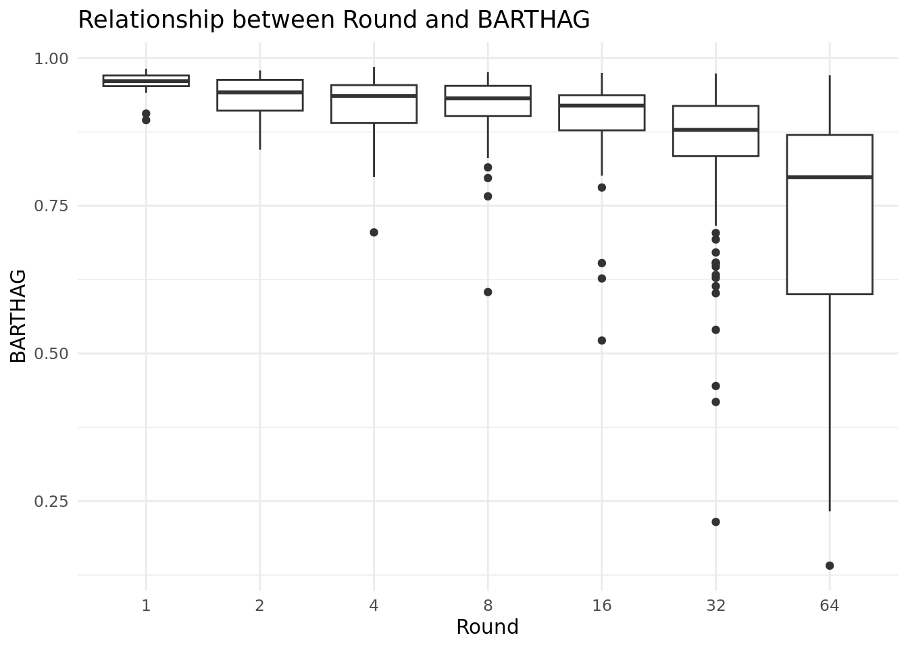
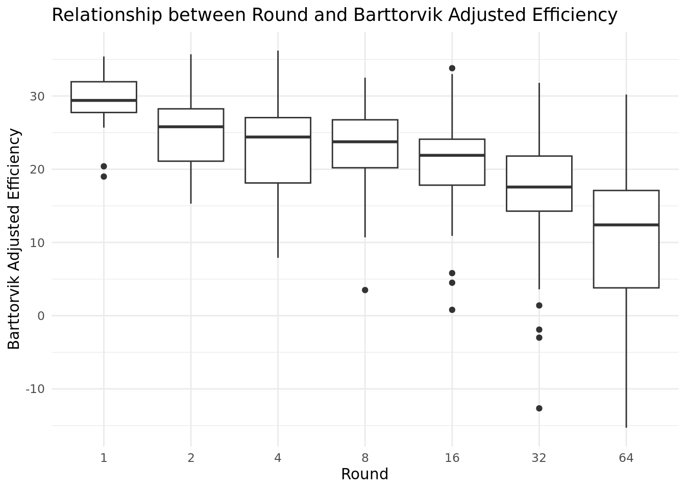
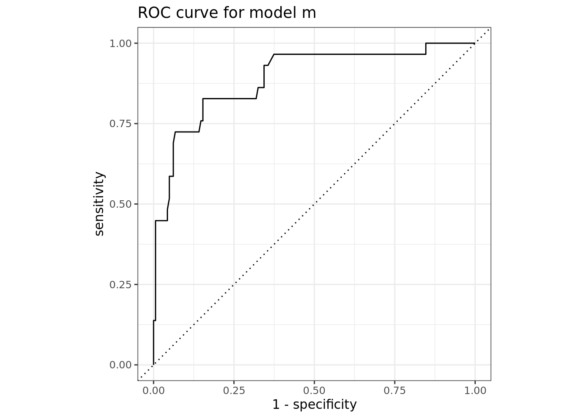
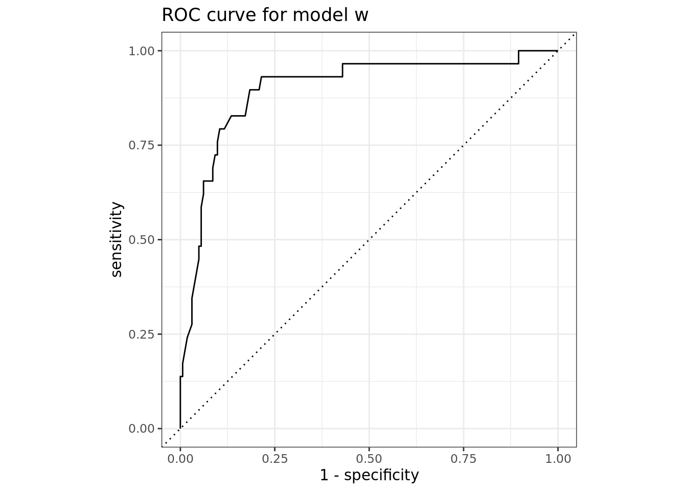

Come March, every college basketball fan is focused on one goal: filling out the perfect March Madness bracket. They are trying to figure out which lower seeded teams are poised to make a surprise run and which higher seeded teams are not as good as advertised. Some have gotten close but still no bracket has been able to correctly predict all 63 games in a tournament. Even in the 2023 tournament, no websites reported a perfect bracket even after just the first day’s slate of games. We have all tried as well and have failed all the same.
The goal of our project is to answer the question: What factors are the strongest predictors of success in March Madness? We are defining “success” as a team making it into the Elite Eight of the tournament. Our hypothesis is that teams with a high BARTHAG value will most be likely to find success in the tournament.
The source of the data is from kaggle.com. However, because a lot of the datasets on kaggle.com are fake, we made sure to cross-check the data with official NCAA data on NCAA.com. We found that the dataset contains accurate information. The data from the dataset is pulled from https://kenpom.com/ and https://www.barttorvik.com/#. The data encompasses March Madness tournaments spanning from 2008 - 2023 (2020 not included). Since we downloaded the dataset before the conclusion of the 2023 tournament, we used data from NCAA.com to fill in the missing data for the 2023 March Madness tournament. The data wrangling is gone into more detail in the following section. Each observation in the dataset represents a team in that year’s tournament.
Data Wrangling- ADD
Relevant variables
Relevant variables were pulled from the dataset by first constructing many boxplots, plotting every variable in the dataset to round number. We used boxplots as they are pretty clear and effective to show the different numeric distributions for multiple categorical variables. From the boxplots, we roughly estimated which ones seemed to have the highest correlation, and further analyzed them in this report. Below are the three variables we chose to investigate further. They happen to be all from https://www.barttorvik.com/#.
BARTHAG: The team’s chance of winning against the average DI team
Wins Above Bubble: How many more or less wins the average bubble team would have against the team’s schedule
Barttorvik Adjusted Efficiency: Bart Torvik’s calculation of how efficient a team is offensively and defensively
Next, we will clean and read the data. First, we edited the CSV file directly to rename some variables so that RStudio could easily recognize them (i.e., removing spaces). Second, we manually added the March Madness 2023 results (since previously there were no 2023 results) so that we could also use those values within our analysis:
Rows: 1011 Columns: 40
── Column specification ────────────────────────────────────────────────────────
Delimiter: ","
chr (1): team
dbl (39): year, seed, round, k_adj_eff, k_adj_off, k_adj_def, k_adj_tempo, b...
ℹ Use `spec()` to retrieve the full column specification for this data.
ℹ Specify the column types or set `show_col_types = FALSE` to quiet this message.
#glimpse(march_madness)
We also will filter out rounds that equal 0 or 68 and create a column called “elite_eight”:
We decided to use logistic regression for our project because we are trying to predict success (making it to the Elite Eight), and our response variable is a categorical variable (round).
We further calculate AIC, make a ROC plot, and calculate AUC under the ROC plot to help us find the best-fit model of the three variables we investigated and identify which variable is the best predictor of success in the tournament.
ModelF (Feng):
march_madness |>mutate(round =as.factor(round)) |>ggplot(aes(x = round, y = BARTHAG)) +geom_boxplot()

BARTHAG was the best boxplot that I was able to create from the variables that I analyzed. The median score of BARTHAG increases for the most part for each round that the tournaments advances. The lower quartile especially narrows down and becomes more specific. There are quite a few outliers in the data but that is to be expected given the unpredictability and volatility of events during the NCAA tournament.
modelf <-logistic_reg() |>set_engine("glm") |>fit(elite_eight ~ BARTHAG, data = train_data, family ="binomial")tidy(modelf)
This is the creation of a logistic regression model for using BARTHAG to predict whether or not a team will make the elite eight. The equation that models this logistic regression is: \(\widehat{round} = 20.92 - 21.32*BARTHAG\).
cat("modelf AIC:", glance(modelf)$AIC)
modelf AIC: 447.3113
The calculated AIC is 447.3113.
modelf_pred <-predict(modelf, test_data, type ="prob")|>bind_cols(test_data |>select(elite_eight))modelf_pred |>roc_curve(truth = elite_eight,`.pred_elite eight`,event_level ="first" ) |>autoplot() +labs(title ="ROC curve for model f")
In this, we generated an ROC curve for BARTHAG to see how good the model was in predicting true positives. From the curve, it seems as if there is significant area underneath the plot.
This is the calculation of the AUC for the BARTHAG model. We got a value of 0.894 for AUC, which is one of the highest scores that we got. This means that BARTHAG is a fairly good predictor of whether or not a team would make it to the elite eight round of March Madness.
ModelM (Mansoor):
march_madness |>mutate(round =as.factor(round)) |>ggplot(aes(x = round, y = b_adj_eff)) +geom_boxplot()

One of the better boxplots I was able to make using the variables I examined was b_adj_eff. The median b_adj_eff generally rises as the event progresses through rounds. As the competition progresses, b_adj_eff’s variability likewise reduces. The data contains a significant number of outliers, but this is to be expected given the unpredictable and volatile nature of occurrences throughout the NCAA tournament. However, an overall association can be generally observed: b_adj_eff seems to increase as the competition progresses.
modelm <-logistic_reg() |>set_engine("glm") |>fit(elite_eight ~ b_adj_eff, data = train_data, family ="binomial")tidy(modelm)
The calculated AIC is 433.7179, which is the lowest AIC value of all three models.
modelm_pred <-predict(modelm, test_data, type ="prob")|>bind_cols(test_data |>select(elite_eight))modelm_pred |>roc_curve(truth = elite_eight,`.pred_elite eight`,event_level ="first" ) |>autoplot() +labs(title ="ROC curve for model m")

In order to evaluate the model’s performance in predicting true positives, we created a ROC curve for b_adj_eff. The curvature suggests that there is a significant area underneath the plot.
This is how the AUC for the b_adj_eff model was determined. One of our most significant scores was an AUC of 0.891, which is what we obtained here, but it is also the lowest out of the three models given here. This indicates that b_adj_eff is an adequately accurate indicator of whether a team will advance to the March Madness elite eight round.
ModelW (Wu):
march_madness |>mutate(round =as.factor(round)) |>ggplot(aes(x = round, y = wins_above_bubble)) +geom_boxplot()
wins_above_bubble was one of the better boxplots I was able to create from the variables that I analyzed. The median wins_above_bubble increases for the most part for each round that the tournaments advances with a few exceptions. As the tournament advance, the variability of wins_above_bubble also decreases. There are quite a few outliers in the data but that is to be expected given the unpredictability and volatility of events during the NCAA tournament. However, a general correlation can be roughly seen: as the tournament advances, wins_above_bubble seems to increase.
modelw <-logistic_reg() |>set_engine("glm") |>fit(elite_eight ~ wins_above_bubble, data = train_data, family ="binomial")tidy(modelw)
This is the creation of a logistic regression model for using wins_above_bubble to predict whether or not a team will make the elite eight. The equation that models this logistic regression is:
The calculated AIC is 434.0668, which is a bit larger than that of b_adj_eff, but lower than that of BARTHAG.
modelw_pred <-predict(modelw, test_data, type ="prob")|>bind_cols(test_data |>select(elite_eight))modelw_pred |>roc_curve(truth = elite_eight,`.pred_elite eight`,event_level ="first" ) |>autoplot() +labs(title ="ROC curve for model w")

In this, we generated an ROC curve for wins_above_bubble to see how good the model was in predicting true positives. From the curve, it seems as if there is significant area underneath the plot, and the curve lies above the y=x line. This means that we have more true positives than false positives, and we are doing a better job than just predicting a team making elite eight by flipping a coin (a 50% chance).
This is the calculation of the AUC for the wins_above_bubble model. We got a value of 0.898 for AUC, which is the highest scores that we got out of the three variables we investigated. This means that wins_above_bubble is a fairly good predictor of whether or not a team would make it to the elite eight round of March Madness.
Results
Our research question was: What factors are the strongest predictors of success in March Madness? In our project, we defined “success” as a team making it into the Elite Eight of the tournament. Our original hypothesis was that teams with a high BARTHAG value would be most likely to find success in the tournament.
From our initial plotting of each variable to the round number, we found the following three variables to seem to be a strong predictor for success in the tournament: 1) BARTHAG (modeled as modelf), 2) Barttorvik adjusted efficiency (modeled as modelm), and 3) wins above bubble (modeled as modelw).
We performed a logistic regression on each variable, with the categorical response variable being round.
AIC, which stands for Akaike information criterion, which is used to compare the fit of models relative to other models. The lower the AIC value the better the model. Below are the three AIC values for the different variables:
BARTHAG (modelf): 447.3113
Barttorvik adjusted efficiency (modelm): 433.7179
Wins above bubble (modelw): 434.0668
Just comparing AIC values, modelm (Barttorvik adjusted efficiency) had the lowest value, while modelw (Wins above Bubble) has just a very slightly higher AIC. Modelf (BARTHAG) has the highest AIC value of the three variables. This shows that Barttorvik adjusted efficiency and wins above bubble seem to be the better predictors.
ROC (Receiver Operating Characteristic) and AUC (Area Under the ROC Curve) are used to measure how good of a classifier a model is, plotting true and false positive rate, compared to a random classifier. The area under the ROC curve also helps determine how good of a classifier a model is, with AUC = 1.0 being the most ideal model (the higher the AUC the better the model). Below are the three AUC values for the three different variables.
BARTHAG (modelf): 0.894
Barttorvik adjusted efficiency (modelm): 0.891
Wins above bubble (modelw): 0.898
Just comparing AUC values, it shows that all three variables are pretty good predictors of success. Modelw (Wins above bubble) had the highest value, while modelf (BARTHAG) has just a very slightly lower AUC. Modelm (Barttorvik adjusted efficiency) also has just a slightly lower AUC compared to modelw and modelf. This shows that Wins above bubble seem to be the best predictor, but the other variables also show to be very good predictors.
Back to our research question of identifying the strongest predictors of success in March Madness, we found that the three variables we investigated (BARTHAG, Barttorvik adjusted efficiency, and Wins above bubble) are all great predictors. If we were to identify just one variable as the strongest predictor of success, we would point to Wins above bubble as the strongest predictor since it has the highest AUC value and the second lowest AIC value (just higher than Barttorvik adjusted efficiency by ~0.3489.
However, since we found that all three variables are strong predictors, further research can be done by creating an additive logistic regression pairing up combinations of the three variables to find if an additive logistic regression can produce an even lower AIC and higher AUC value.